Já aprovadas por você, sem cartão: mapa do controle 19 e 20, Conexões 13, mapa das portas 5, 6, 7 e 8, Navegação 28, Sistema 12 e Kyty.
Você pediu ajuste em seis mudanças da rodada 4. Cada uma está aqui com as suas palavras, o que mudou, a foto como você viu e a de agora, com a parte mexida contornada. Aprove ou diga o que falta.
O que você pediu e o que mudou
| Mudança | O que mudou |
|---|---|
| 01-12 | A linha «O jogo vê» saiu dos dois cartões, com a dica e os estados de exemplo (modo Xbox, Pro Controller, queda). O cartão volta a ter só a seleção da forma (DualSense, Xbox 360, Nintendo Pro), que já diz o que o jogo vê. A letra do cartão sobe para 12 px e a bateria fica na cor do texto, sem o verde de «ok». |
| 02-17 | Saiu o bloco inteiro: o botão «O que chega» das duas faixas, a janela com as doze funções e o estado de exemplo da janela. A faixa de cada controle volta a dizer só a forma que o jogo vê (DualSense, Xbox 360). |
| 02-18 | O controle desconectado mostra só a vaga: «Player 3 • Desconectado» e «Player 4 • Desconectado», sem cor de plástico, máscara, microfone, sensores nem bateria. Os conectados seguem chamados pela cor do plástico. Ficam os alvos de 24 px e a letra de 12 px. |
| 07-34 | A aba «O que seguem» da janela Lovense virou uma grade de duas colunas iguais e duas linhas da mesma altura. Em cima, «O que os acessórios seguem» e «Como os três tocam juntos» são três botões do mesmo tamanho cada, só com o nome (a explicação foi para a dica). Embaixo, os jogos: a frase «Nenhum jogo marcado…» saiu e cada jogo é uma linha de 36 px, com a caixa e o nome. Toda letra da aba tem 12 px ou mais. |
| 07-35 | A força de cada canal ficou com um título só («Força de cada canal», de 0 a 20) e uma grade de três colunas iguais: Vibração, Gatilho e Háptica no topo, e cada aparelho numa faixa com os três deslizantes alinhados embaixo do nome. Saíram as legendas «dois motores» e «um motor» e o «/20» de cada número; o deslizante tem 24 px de altura. |
| calibrar-7 | Voltou o arranjo de antes, com o respiro dele entre os blocos; ficam os alvos de 24 px e a letra de 12 px. Saiu o texto que sobrava: o nome do controle repetido em cima da mira e o «2 controles conectados» do rodapé. As vagas sem controle dizem só «Player 3» e «Player 4» com «Desconectado», no lugar da cor do plástico em letra grande. Cabe sem rolar também em 1212x740. As seis barras da leitura começam juntas, e a unidade do tremor ficou «°/s». |
Jogar: a linha «O jogo vê» sai
01-12 · O-ESTADO-DIZ-O-QUE-O-JOGO-VE-DE-CADA-CONTROLE-01Você pediu«sem dica , remove essa zona extra, a seleção do botão já fala tudo.»
A linha «O jogo vê» saiu dos dois cartões, com a dica e os estados de exemplo (modo Xbox, Pro Controller, queda). O cartão volta a ter só a seleção da forma (DualSense, Xbox 360, Nintendo Pro), que já diz o que o jogo vê. A letra do cartão sobe para 12 px e a bateria fica na cor do texto, sem o verde de «ok».
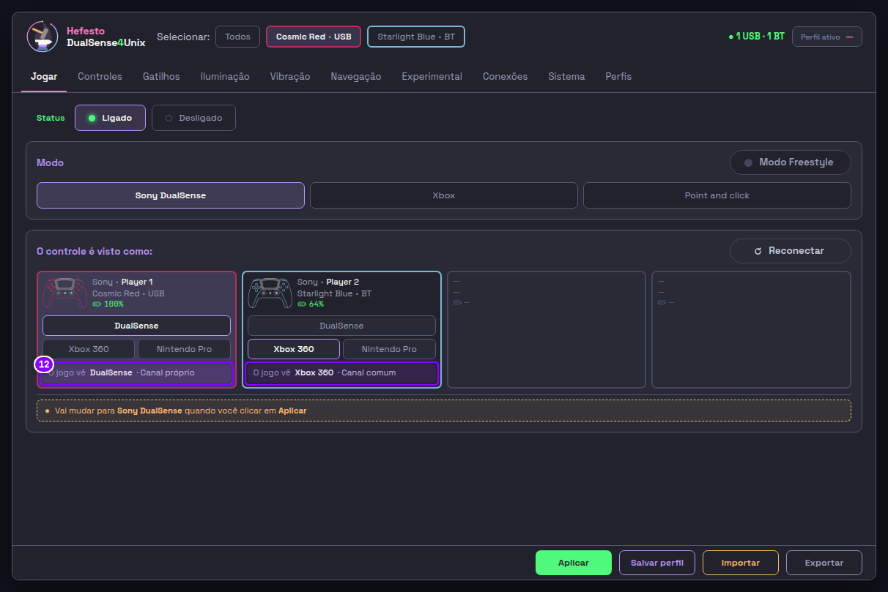
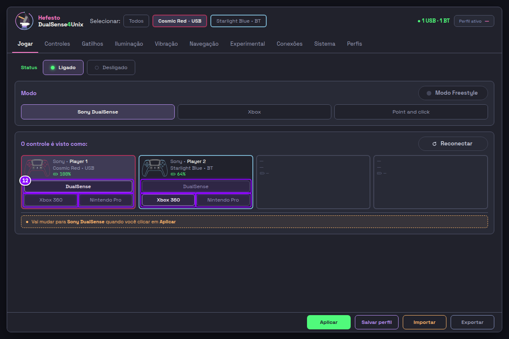
Controles: o «O que chega» sai
02-17 · O-ESTADO-DIZ-O-QUE-O-JOGO-VE-DE-CADA-CONTROLE-01Você pediu«remove isso. muito confuso. estamos melhorando e diminuindo texto, ordenando tudo e deixando menos confuso e maluco mais clean»
Saiu o bloco inteiro: o botão «O que chega» das duas faixas, a janela com as doze funções e o estado de exemplo da janela. A faixa de cada controle volta a dizer só a forma que o jogo vê (DualSense, Xbox 360).
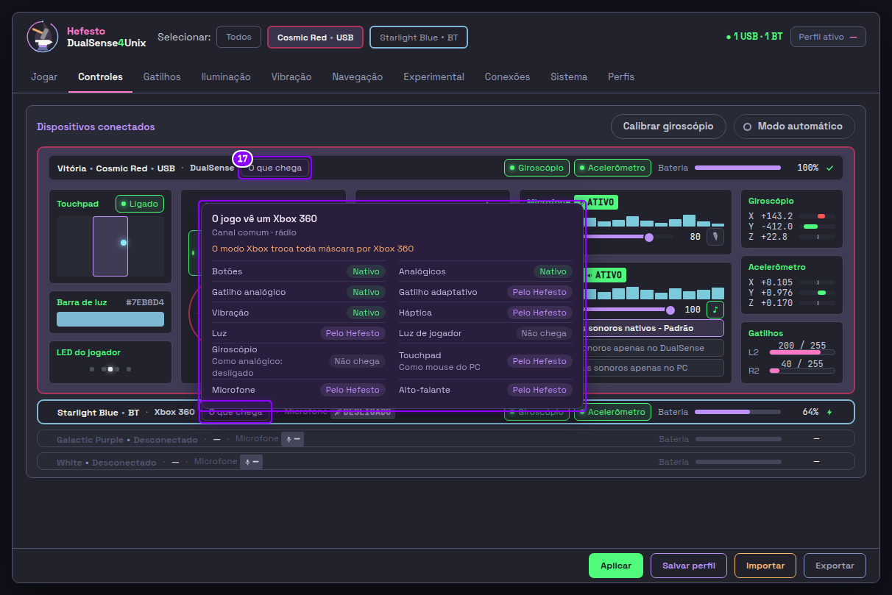
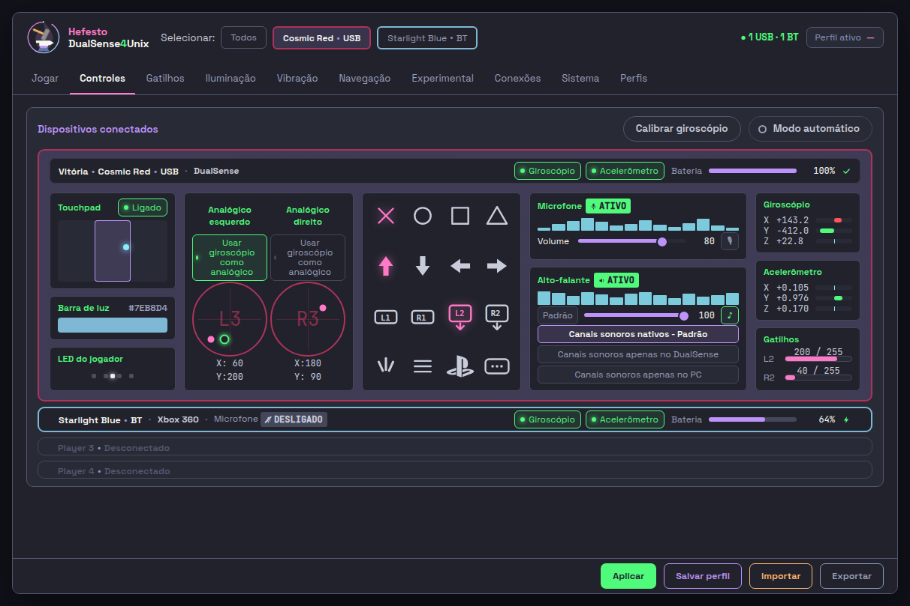
Controles: o desconectado mostra só a vaga
02-18 · OS-ALVOS-E-A-LETRA-CRESCEM-E-A-INTERFACE-GANHA-TAMANHO-01Você pediu«galatic purple nem tá conectado só deixa o p do player e desconectado.»
O controle desconectado mostra só a vaga: «Player 3 • Desconectado» e «Player 4 • Desconectado», sem cor de plástico, máscara, microfone, sensores nem bateria. Os conectados seguem chamados pela cor do plástico. Ficam os alvos de 24 px e a letra de 12 px.
A vaga se chama «Player 3» e «Player 4», como no P do jogador; decidido por delegação, a validar por você.
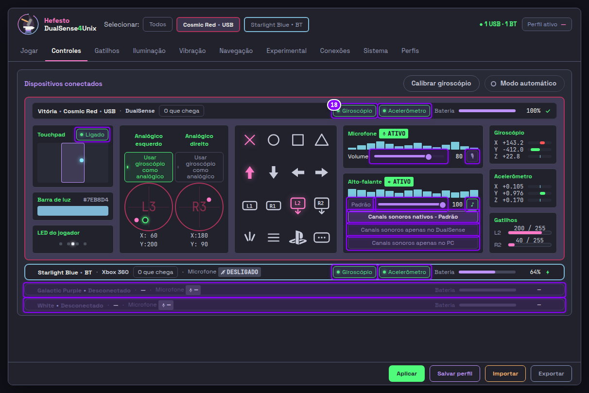
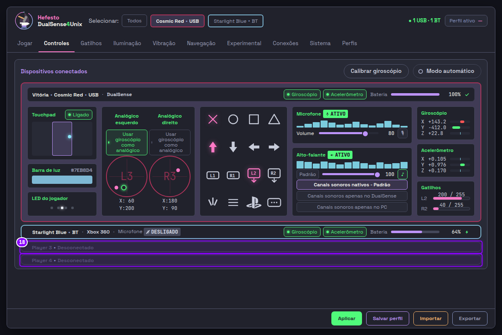
Lovense: os jogos que os acessórios seguem
07-34 · OS-ACESSORIOS-SEGUEM-OS-JOGOS-ESCOLHIDOS-COM-A-FORCA-NO-DESLIZANTE-01Você pediu«ajustar os elementos tem muita coisa na tela e tá bagunçada mas a ideia é isso aí»
A aba «O que seguem» da janela Lovense virou uma grade de duas colunas iguais e duas linhas da mesma altura. Em cima, «O que os acessórios seguem» e «Como os três tocam juntos» são três botões do mesmo tamanho cada, só com o nome (a explicação foi para a dica). Embaixo, os jogos: a frase «Nenhum jogo marcado…» saiu e cada jogo é uma linha de 36 px, com a caixa e o nome. Toda letra da aba tem 12 px ou mais.
Os jogos e a força continuam dentro da janela que a engrenagem da Lovense abre, na aba «O que seguem».
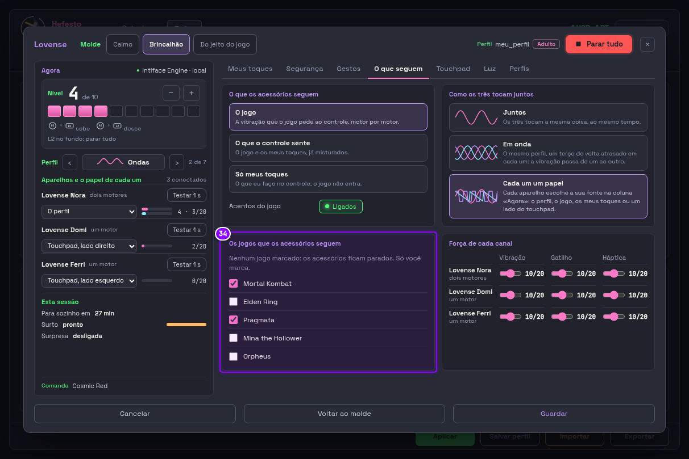
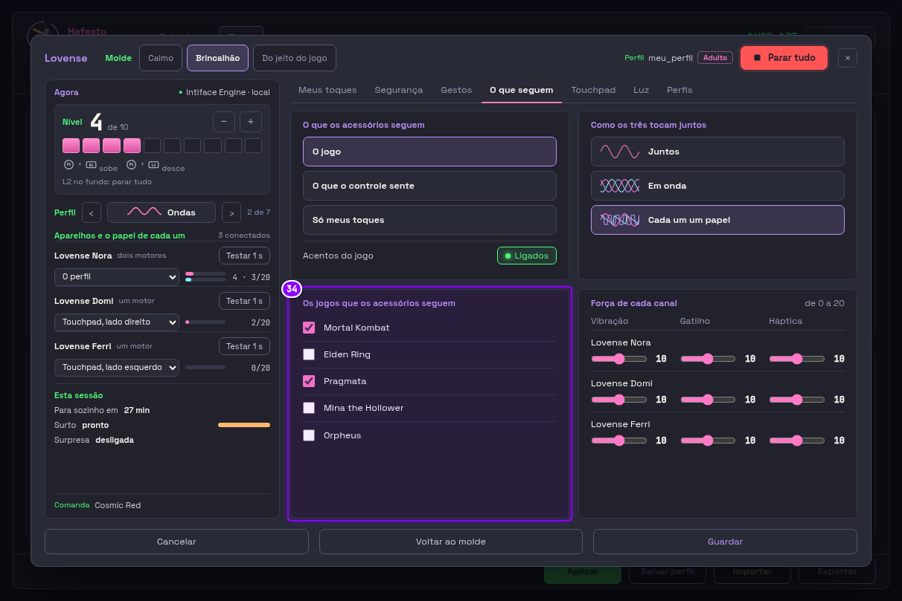
Lovense: a força de cada canal
07-35 · OS-ACESSORIOS-SEGUEM-OS-JOGOS-ESCOLHIDOS-COM-A-FORCA-NO-DESLIZANTE-01Você pediu«(ajustar, sem texto)»
A força de cada canal ficou com um título só («Força de cada canal», de 0 a 20) e uma grade de três colunas iguais: Vibração, Gatilho e Háptica no topo, e cada aparelho numa faixa com os três deslizantes alinhados embaixo do nome. Saíram as legendas «dois motores» e «um motor» e o «/20» de cada número; o deslizante tem 24 px de altura.
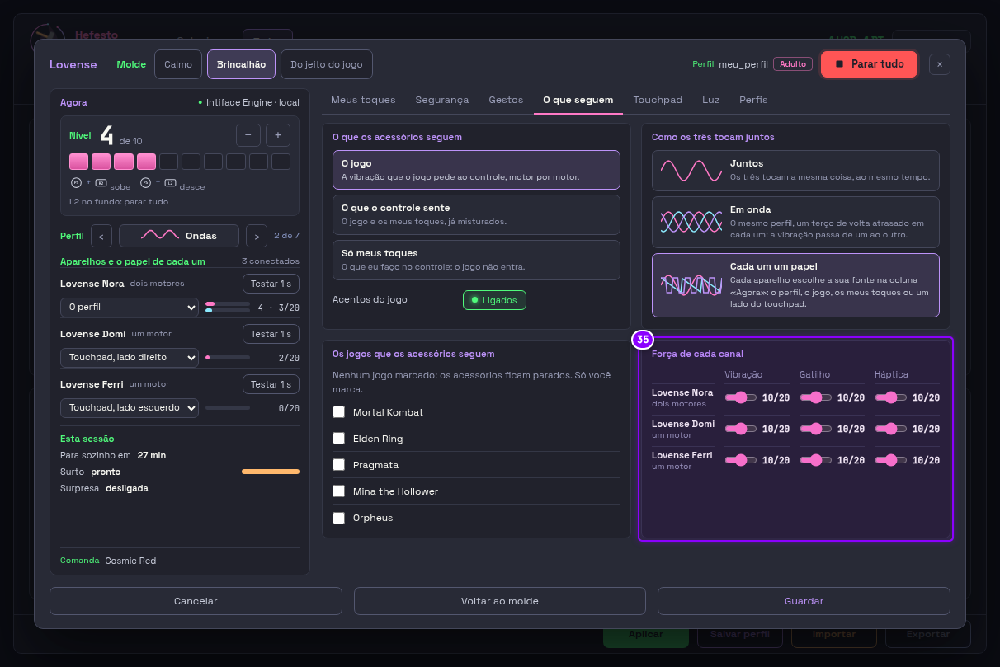
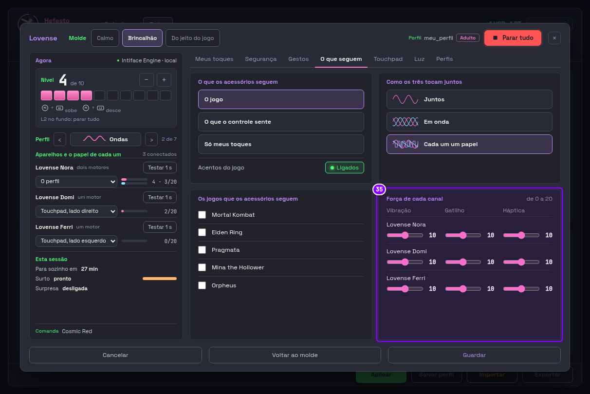
Calibrar giroscópio: o arranjo de antes, com menos texto
calibrar-7 · OS-ALVOS-E-A-LETRA-CRESCEM-E-A-INTERFACE-GANHA-TAMANHO-01Você pediu«antes tá melhor;. mmas o antes tá confuso tambem e muito cheio de texto.»
Voltou o arranjo de antes, com o respiro dele entre os blocos; ficam os alvos de 24 px e a letra de 12 px. Saiu o texto que sobrava: o nome do controle repetido em cima da mira e o «2 controles conectados» do rodapé. As vagas sem controle dizem só «Player 3» e «Player 4» com «Desconectado», no lugar da cor do plástico em letra grande. Cabe sem rolar também em 1212x740. As seis barras da leitura começam juntas, e a unidade do tremor ficou «°/s».
As vagas sem controle ganharam a mesma forma da Controles («Player 3» e «Desconectado»), sem você ter pedido aqui; a validar por você.
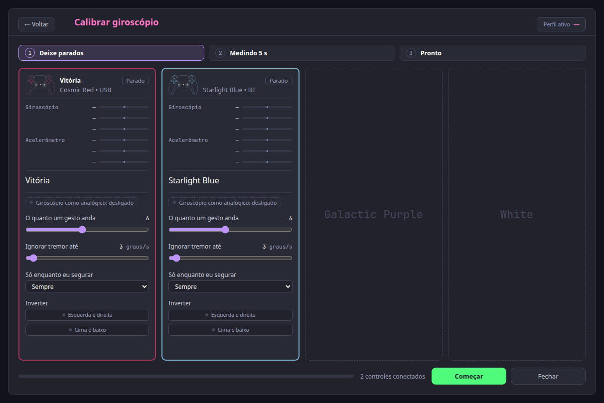
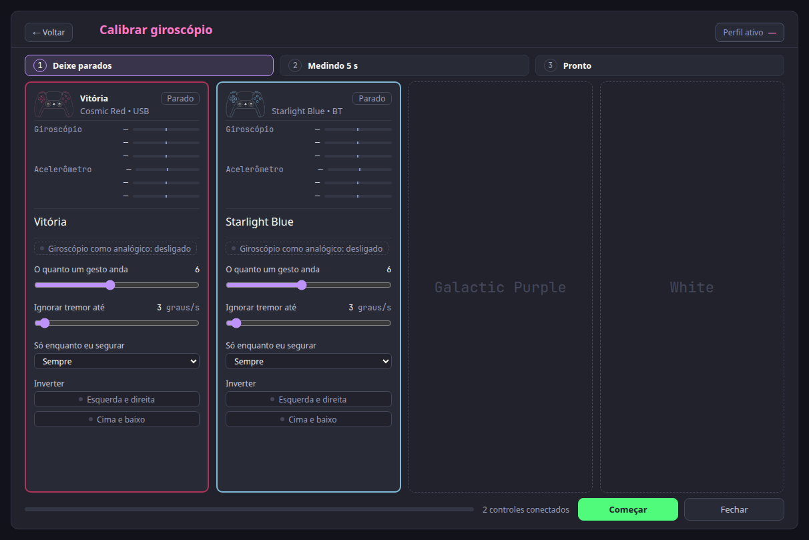
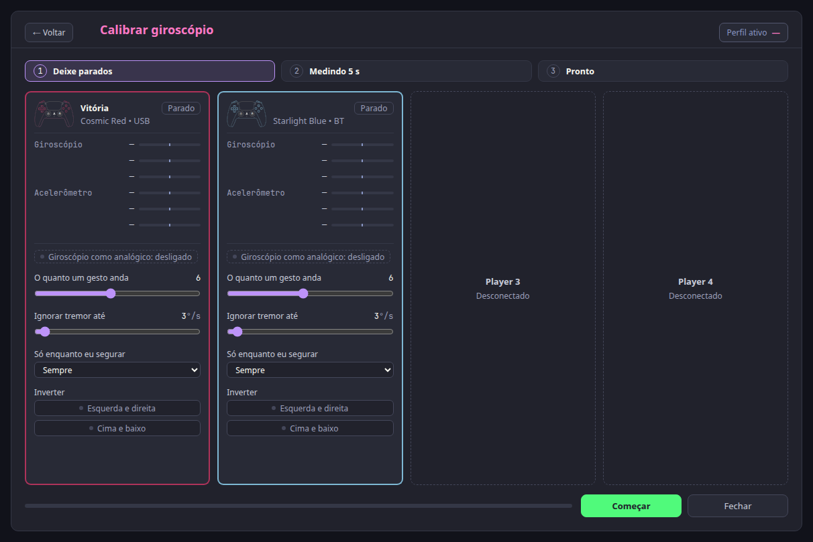
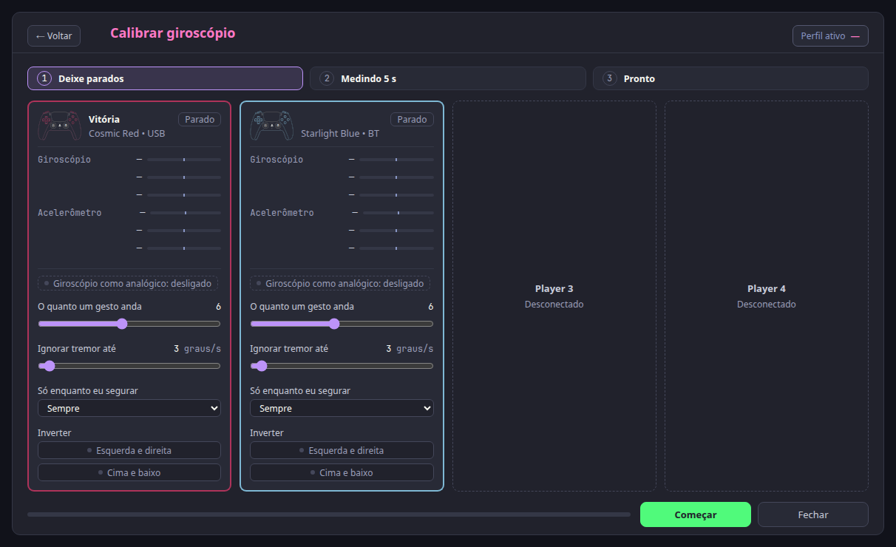